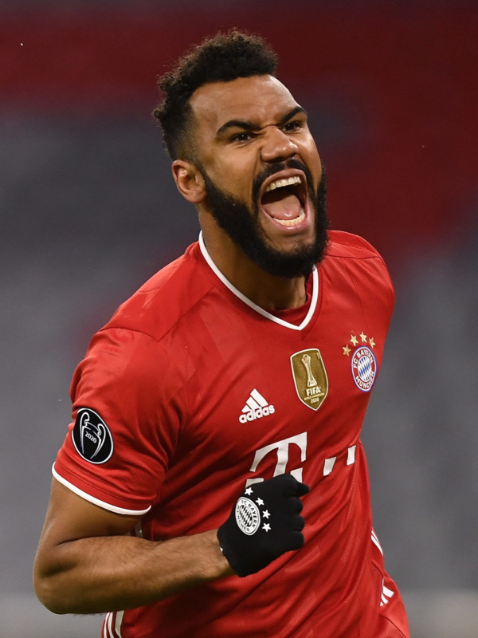

Eric Maxim Choupo-Moting
Player Information
First Name: Eric Maxim
Last Name: Choupo-Moting
Number: 13
Date of Birth: March 23, 1989
Age: 34
Height: 191cm / 6'3"
Dominant Foot: Right
Nationality: Cameroon
Positions: CF
Background
Choupo-Moting had a long career with a variety of different clubs from different countries. His youth was spent in Germany, where he played for Bergedorf, Hamburger SV, and then FC Nurnberg. Choupo-Moting began his professional career at Hamburger SV. He played for the team until 2011. Then, Choupo-Moting moved to FSV Mainz 05, where he developed himself into a solid CF. Stoke City, an English club, signed him in 2017, where he delivered solid performances for the duration of 2 seasons. Choupo-Moting's big name transfer was to PSG, one of the biggest clubs in France. With PSG, he has won multiple French titles, though he wasn't always a starting forward. In 2020, he signed for Bayern and has played for them since. He has won a number of domestic titles with the club.
Statistics
Statistics for Choupo-Moting's 2021-22 Bundesliga season:
- Appearances: 20
- Goals: 4
- Assists: 2
- Yellow Cards: 0
- Red Cards: 0
Play Style
Eric Maxim Choupo-Moting is a solid striker who has been crucial to Bayern Munich in recent years. While he is not known as a world-class forward, he definitely fits into the mold of a reliable CF. His playing style makes him a perfect "target man" - a CF who uses his physicality for hold-up play and second balls. Choupo-Moting is tall and strong, and this makes him a perfect outlet for hold-ups. He stays high up the field to receive the ball and then uses his body and strength to block off opposing players from the ball. This hold-up gives a bit of time for Bayern's other players to run forward into the opposition box. Once Choupo-Moting's teammates arrive, he again uses his strength to turn away from the surrounding defenders and pass the ball to his teammate. These plays result in promising chances because defenders often get outnumbered as they are either focused on Choupo-Moting or aren't fast enough to arrive as quickly as Bayern's other forwards. Choupo-Moting's physicality also unfolds in another aspect of his style: second balls. His stature, strength, and jumping allow him to win aerial duels against opposing defenders and head the ball to oncoming teammates. The teammates then receive those "second balls" and can immediately create a goal-scoring opportunity. This ability is helpful when Bayern is being pressured and can't play out of the back. That's when Bayern's defenders or a goalkeeper will make a long pass to Choupo-Moting. Not only can this play beat the opposing press and progress the ball, but it can also result in an instant promising chance. Since Choupo-Moting receives the ball far up the pitch, he immediately creates danger if he can win the aerial duel and get the second ball to his teammate. Choupo-Moting's style of play has been useful for Bayern in recent seasons, proving that Bayern require a true striker like him in order to have a functioning offense.